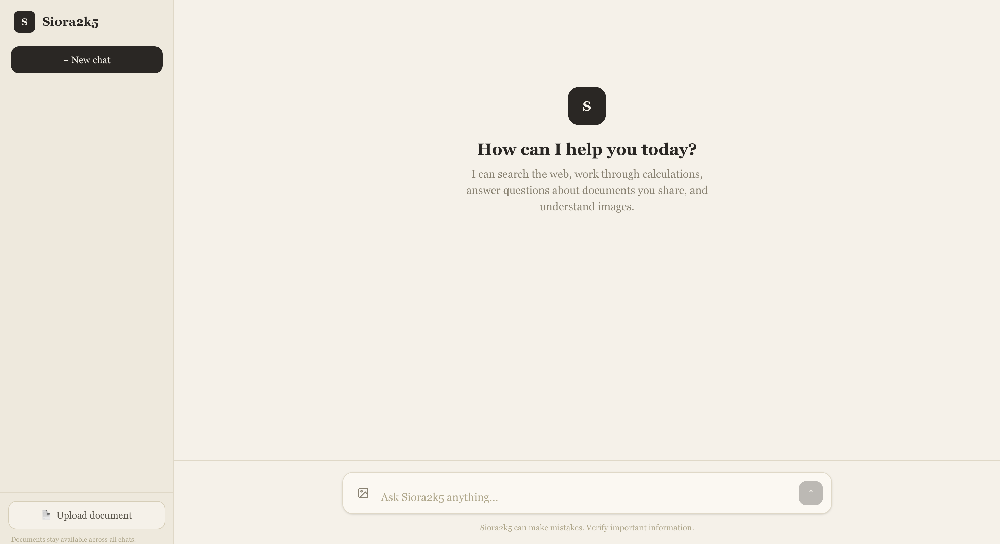
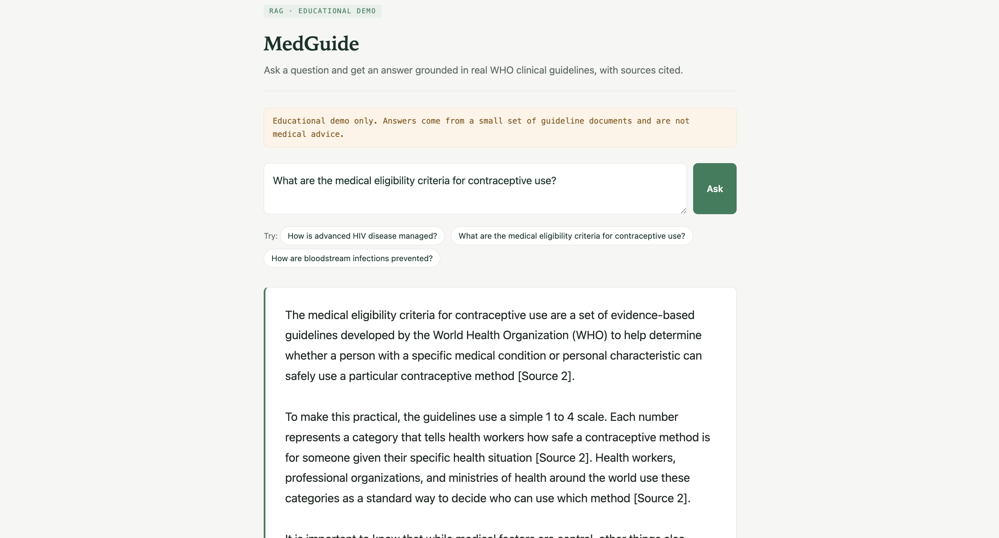
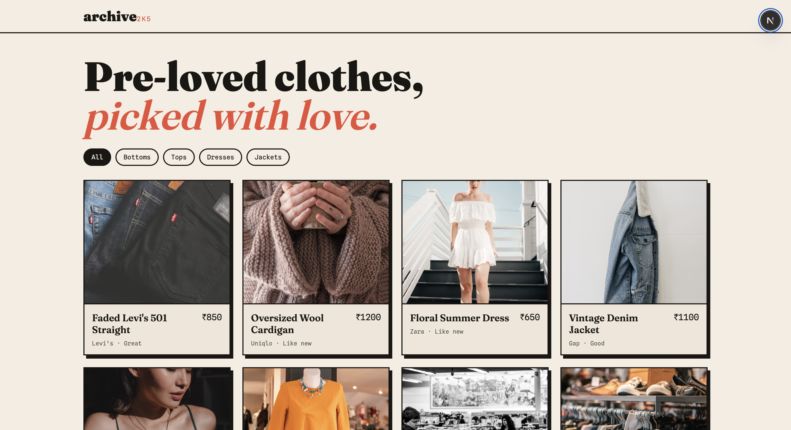
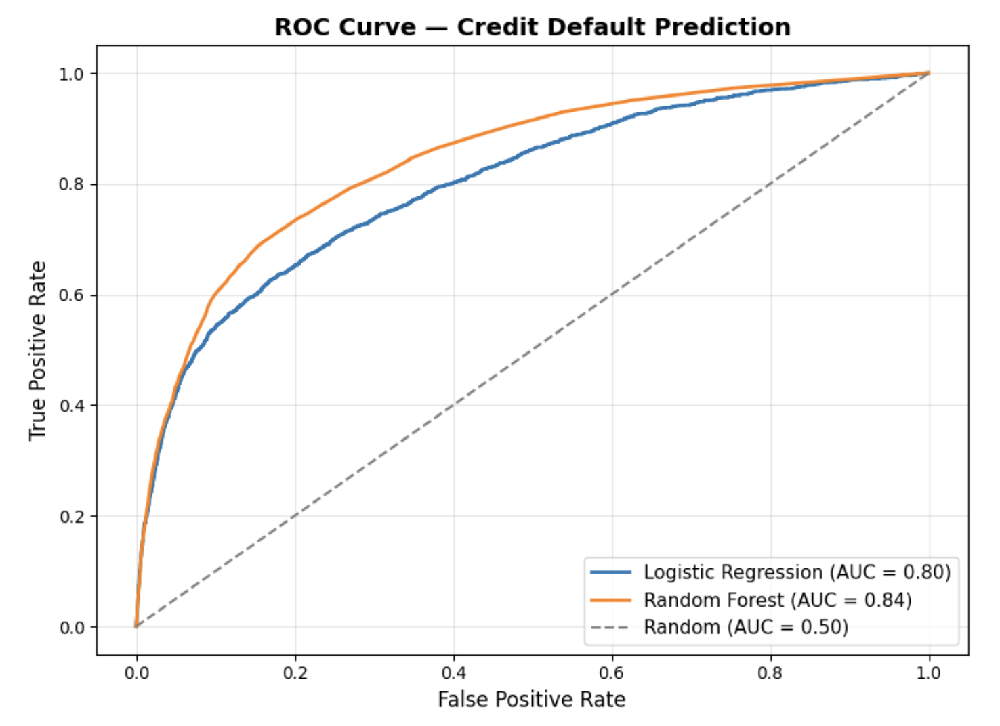
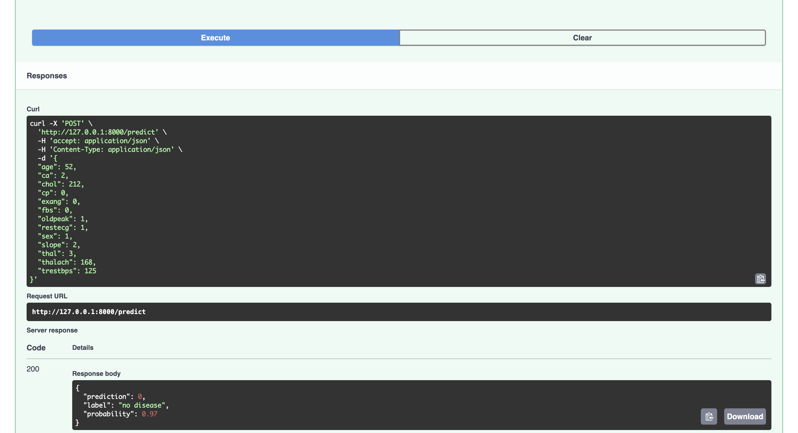

Work
Projects spanning agentic AI, machine learning, MLOps, RAG systems, IoT, and full-stack development — from research papers to deployed applications.

IoT-Enabled Face Recognition Attendance System
An end-to-end LBPH face recognition pipeline on a Raspberry Pi 4 that automates attendance for 50+ students at 95%+ accuracy — cutting per-session logging from ~5 minutes to zero manual input.

Multivariate Time-Series Energy Consumption Prediction
An RFE-LSTM forecasting pipeline on the UCI Household Electric Power Consumption dataset (35K hourly samples). An ablation study identified lag features (1–3) as key signals, reducing MAE/RMSE by up to 7% versus the no-lag baseline — built for real-time smart-grid energy management.

Siora2k5 — Agentic AI Research Assistant
An AI agent that autonomously selects and chains tools — web search, calculator, document RAG, and image vision — to answer multi-step questions. Built two ways: from scratch (to understand the agentic loop mechanics) and with LangGraph (for the production pattern). Achieves 100% tool-selection accuracy on the evaluation harness. FastAPI backend deployed on Render, Next.js chat UI on Vercel.

Explainable AI for Chest X-Ray Diagnosis
A multi-label DenseNet121 classifier on the NIH ChestX-ray14 dataset (112K images, 14 labels) reaching 0.83 macro-AUC with patient-level stratification to avoid leakage. Deployed via a FastAPI endpoint with a Grad-CAM web UI so non-technical users can visualize predictions.

MedGuide — Clinical Guideline RAG Assistant
A retrieval-augmented generation system that answers clinical questions grounded in WHO guideline PDFs. Retrieves the most relevant passages via vector search, then instructs the LLM to answer only from those sources — with inline citations (document + page number). When the corpus doesn't cover a question, it says so rather than guessing.

Archive 2k5 — Thrift Store with UPI QR Checkout
A full-stack thrift store template with an admin dashboard and a custom UPI QR checkout flow: items are reserved on checkout, buyers pay via any UPI app, and the admin confirms receipt — zero payment gateway fees. A complete Razorpay integration is built in but dormant; switching to automated payment verification requires one environment variable change.

Credit Risk Analysis — Predicting Loan Default
End-to-end credit risk analysis on 150,000 borrowers from the "Give Me Some Credit" dataset. Rigorous EDA on a highly imbalanced target (6.7% default rate), followed by a head-to-head model comparison using ROC-AUC (0.84), precision, and recall. Key finding: credit utilization is the top default driver — but only a non-linear model (Random Forest, feature importance 0.27) reveals it; its linear correlation with the target is near zero.

Heart Disease Predictor — End-to-End MLOps Pipeline
A production ML engineering demo: a RandomForest classifier trained on the UCI Heart Disease dataset, served through a REST API, containerized with Docker, and automatically tested and rebuilt on every push via GitHub Actions CI/CD. The model is intentionally simple — the focus is the reproducible, portable infrastructure around it.

JobAI — Your AI Career Copilot
An AI-powered mobile app that helps users optimize resumes for ATS compatibility, generate tailored cover letters, plan job-search strategy, draft cold outreach emails, and track applications across Applied, Interview, Offer, and Rejected stages.

Educational Math Game for Children (Ages 5–10)
An interactive math learning site with musical feedback designed to improve engagement and retention for young learners. Built around UX principles, with documented purpose, novelty, user flow, and feature sequencing.
University Club Dashboard — Multi-Club Management System
A database-linked admin dashboard that centralizes management of multiple university clubs — Acting, Music, Coding, and Robotics. Provides unified views for club details, budgets, activities, and competitions through a single interface for administrators.
Trader Performance vs Market Sentiment — Primetrade Assignment
Analysis of whether Bitcoin market sentiment (Fear & Greed Index) predicts trader performance on Hyperliquid (~211K trades). Key finding: per-trade PnL does not differ significantly between Fear and Greed regimes (Welch p=0.69, Mann-Whitney p=0.53). The real signal is behavioural — average position size during Fear (~$7,180) is 57% larger than during Greed (~$4,570).